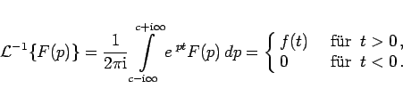

Inhalt Index DeskTop Bronstein

 Integraltransformationen Laplace-Transformation Eigenschaften der Laplace-Transformation Laplace-Transformierte, Original- und Bildbereich
Integraltransformationen Laplace-Transformation Eigenschaften der Laplace-Transformation Laplace-Transformierte, Original- und Bildbereich


Aus der Bildfunktion erhält man die Originalfunktion mit Hilfe der Umkehrformel
|  | (15.8) |
Der Integrationsweg dieses komplexen Integrals ist die Parallele zur imaginären Achse, wobei gilt. Ist die Stelle t = 0 eine Sprungstelle, d.h. ist  , dann gibt das Integral dort den Mittelwert an.
, dann gibt das Integral dort den Mittelwert an.